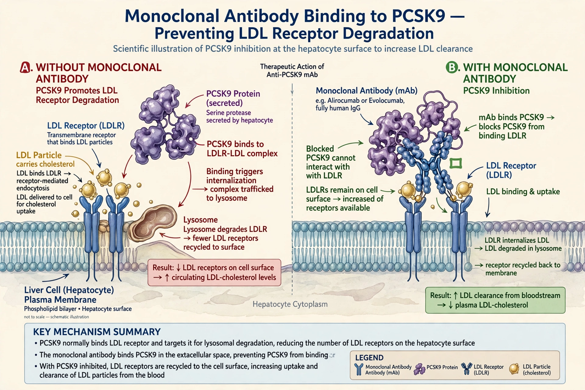

Evolocumab

| Trade name | Repatha |
|---|---|
| Type | Fully human monoclonal antibody (IgG1) |
| Target | PCSK9 |
| Administration | Subcutaneous injection, every 2 weeks or monthly |
| Manufacturer | Amgen |
| Approved | 2015 (FDA and EMA) |
Evolocumab, sold under the brand name Repatha, is a fully human monoclonal antibody used to lower cholesterol. It inhibits PCSK9 (proprotein convertase subtilisin/kexin type 9), a protein that binds low-density lipoprotein (LDL) receptors and targets them for degradation; blocking PCSK9 increases the number of LDL receptors on liver cells and so clears more LDL cholesterol from the blood.
Medical use
Evolocumab is approved as an adjunct to diet and maximally tolerated statin therapy for adults with heterozygous or homozygous familial hypercholesterolaemia and for patients with established cardiovascular disease at high risk of further events who need additional LDL lowering. It typically reduces LDL cholesterol by about 50–60% on top of statins. It is injected subcutaneously, either 140 mg every two weeks or 420 mg once monthly.
Evidence
The FOURIER outcomes trial (2017), in over 27,000 patients with atherosclerotic cardiovascular disease, showed that evolocumab reduced the composite of cardiovascular death, myocardial infarction, stroke, hospitalisation for unstable angina and coronary revascularisation, driven mainly by fewer heart attacks and strokes, without a significant reduction in cardiovascular mortality. Common adverse effects are mild, including injection-site reactions and nasopharyngitis. The drug's high launch price (around US$14,000 per year in the United States, later reduced) prompted debate about cost-effectiveness; the related antibody alirocumab is its main competitor in the PCSK9 inhibitor class.